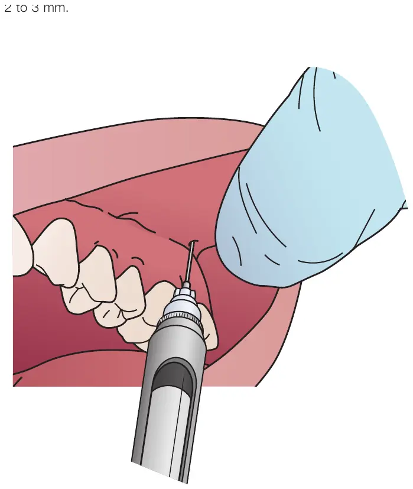

نسخه استخراجشده؛ ترجمه یا تأیید علمی انجام نشده است. وضعیت: captured
هماتوم یعنی نشت خون به فضاهای خارجعروقی، در اثر خراشیدن ناخواستهی یک رگ — شریان یا ورید — حین تزریق بیحسی.

و این دو یکی نیستند: هماتومی که پس از خراشیدن یک شریان شکل میگیرد، معمولاً تا زمان مداخله بهسرعت بزرگ میشود — چون فشار خون داخل شریان بهطور قابلتوجهی بیشتر است. خراشیدن یک ورید ممکن است به هماتوم منجر شود یا نشود.
عامل تعیینکنندهی دیگر: تراکم بافت اطراف رگ آسیبدیده.
هماتوم پس از بلاک PSA دقیقاً همینطور است: تورم دیر دیده میشود، چون خون در فضایی شل و بزرگ جمع شده است. در کام، برعکس، بافت متراکم و محکم به استخوان چسبیده است و هماتوم بهندرت پیش میآید.
اقدام فوری: به محض دیدن تورم، روی محل خونریزی فشار مستقیم بده و یخ بگذار؛ گرما را تا روز بعد به کار نبر، چون رگ را گشاد میکند.
این قواعد برای پیشگیری از تریسموس تدوین شدهاند، ولی جلوی هماتوم و بیشتر عوارض موضعی دیگر را هم میگیرند:
و یک جملهی صادقانه که باید جدی بگیری: نه تریسموس همیشه قابل پیشگیری است، نه هماتوم. یعنی رعایت همهی این قواعد، احتمال را کم میکند نه صفر — و این را به بیمار هم باید گفت.